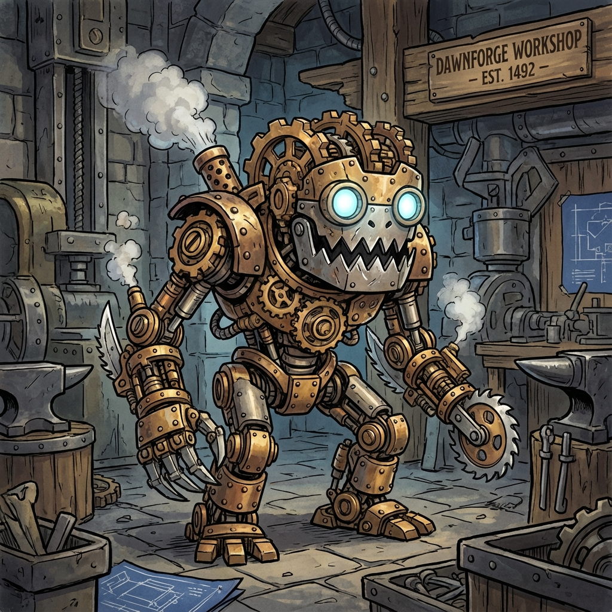

Gear Mephit
Mechanistic Essence Elemental
Type: Small Elemental (Neutral)
CR: 1/2 (100 XP)
Description
A tiny, mechanical imp assembled from interlocking brass gears and metal plates. Steam hisses from its joints, and it moves with steady clockwork efficiency. These mephits manifest when Mechanistic Essence is disrupted, particularly in forges, workshops, or areas with complex machinery.
Stat Block
Armor Class: 13 (metallic plates)
Hit Points: 22 (5d6+5)
Speed: 20 ft., fly 30 ft. (clumsy)
STR10 (+0)
DEX14 (+2)
CON12 (+1)
INT7 (-2)
WIS10 (+0)
CHA8 (-1)
**Damage Resistances:** Bludgeoning, Piercing, and Slashing from nonmagical attacks
**Condition Immunities:** Poisoned
**Senses:** Darkvision 60 ft., passive Perception 10
**Languages:** Understands Terran and one planar language (cannot speak)
**Condition Immunities:** Poisoned
**Senses:** Darkvision 60 ft., passive Perception 10
**Languages:** Understands Terran and one planar language (cannot speak)
Abilities & Actions
**Clockwork Frame:** The mephit's mechanical body clanks and whirrs, occasionally emitting a soft ticking.
**Serrated Blade (Melee Attack):**
The mephit attacks with a spinning saw-like appendage of whirring gears.
*Melee Weapon Attack:* +4 to hit, reach 5 ft., one target
*Hit:* 6 (1d8 + 2) slashing damage
**Gear Grenades (Action):**
The mephit hurls a whirring orb to a point within 30 ft. After 1 round, the grenade explodes in a 10-foot radius, dealing 7 (2d6) piercing damage; creatures in the area can attempt a Dexterity save (DC 13) for half damage. On a failed save, a creature is also Slowed (speed reduced by 10 ft.) until the end of its next turn.
**Clockwork Counter (Reaction; Recharge 4-6):**
When hit by a melee attack, the mephit's chassis emits a teeth-rattling gear-grind. The attacker must make a Dexterity save (DC 13) or take 4 (1d6) thunder damage and be pushed 10 ft. away. This can also shatter fragile objects in the area or rattle allies.
**Precision Overdrive (Bonus Action):**
The mephit targets one creature (ally or enemy) within 30 ft. with a sudden burst of mechanical insight. If targeting an ally, that ally has advantage on its next attack or skill check before the end of its next turn. If targeting an enemy, the mephit attempts to cause an "overload": the enemy has disadvantage on its next attack roll.
**Serrated Blade (Melee Attack):**
The mephit attacks with a spinning saw-like appendage of whirring gears.
*Melee Weapon Attack:* +4 to hit, reach 5 ft., one target
*Hit:* 6 (1d8 + 2) slashing damage
**Gear Grenades (Action):**
The mephit hurls a whirring orb to a point within 30 ft. After 1 round, the grenade explodes in a 10-foot radius, dealing 7 (2d6) piercing damage; creatures in the area can attempt a Dexterity save (DC 13) for half damage. On a failed save, a creature is also Slowed (speed reduced by 10 ft.) until the end of its next turn.
**Clockwork Counter (Reaction; Recharge 4-6):**
When hit by a melee attack, the mephit's chassis emits a teeth-rattling gear-grind. The attacker must make a Dexterity save (DC 13) or take 4 (1d6) thunder damage and be pushed 10 ft. away. This can also shatter fragile objects in the area or rattle allies.
**Precision Overdrive (Bonus Action):**
The mephit targets one creature (ally or enemy) within 30 ft. with a sudden burst of mechanical insight. If targeting an ally, that ally has advantage on its next attack or skill check before the end of its next turn. If targeting an enemy, the mephit attempts to cause an "overload": the enemy has disadvantage on its next attack roll.
Combat Tactics
**Robotic & Efficient:** Methodical, focusing on disabling threats.
**Tactical Approach:** Tosses gear grenades into clustered foes, then uses Clockwork Counter to deter melee attackers. Uses Precision Overdrive strategically to swing combat in its favor.
**Environment:** Found in forges, workshops, mechanical puzzles, or areas with disrupted Mechanistic Essence.
**Tactical Approach:** Tosses gear grenades into clustered foes, then uses Clockwork Counter to deter melee attackers. Uses Precision Overdrive strategically to swing combat in its favor.
**Environment:** Found in forges, workshops, mechanical puzzles, or areas with disrupted Mechanistic Essence.